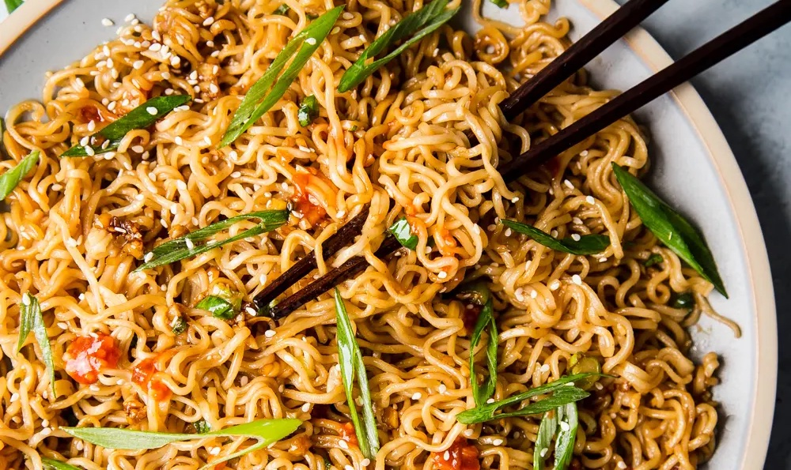

Sesame Garlic Ramen Noodels
 4
servings
4
servings 25
minutes
25
minutes Source
Source Vegetarian
Vegetarian
Noodles yum yum.

33 oz packages instant ramen¼ cupsoy sauce¼ cupoyster sauce or hoisin sauce1 tbsprice vinegar1 tbspbrown sugar½ - 1 tspchili sauce or sriracha¼ cupwater2 tbsptoasted sesame oil4 clovesgarlic, minced1 tspfresh grated ginger4-6green onions, thinly sliced1 tspsesame seeds
Ingredients
33 oz packages instant ramen
In a large pot of boiling water, cook ramen according to package, about
3 - 4 minutes; drain well.
¼ cupsoy sauce¼ cupoyster sauce or hoisin sauce1 tbsprice vinegar1 tbspbrown sugar½ - 1 tspchili sauce or sriracha¼ cupwater
In a small bowl, whisk together soy sauce, oyster sauce, rice vinegar, brown sugar, chili sauce and water.
2 tbsptoasted sesame oil
Heat sesame oil in a large skillet set over medium heat.
4 clovesgarlic, minced1 tspfresh grated ginger
Stir in garlic and ginger until fragrant, about
1 minute.
Pour in the bowl of sauce and simmer for
3 - 4minutes. Stir in cooked ramen noodles until heated through and evenly coated in sauce, about3 minutes.
4-6green onions, thinly sliced1 tspsesame seeds
Garnish with green onions and sesame seeds.